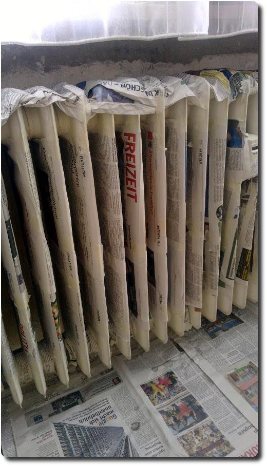

Zeitungen vs Blogs
Ich bin ja ein eifriger Zeitungsleser. Dabei kann ich mich irgendwie besser auf Artikel konzentieren, als beim Lesen von langatmigen Blogs und Internet-Artikeln. Über die Vielfalt der Beiträge bekomme ich ein gutes Bild darüber, was in der Welt und meiner Umgebung passiert. Nicht vollständig, aber schon umfassend. So. Und was macht man mit den Zeitungen, wenn sie durchgelesen sind?
Wir nutzen sie gerade zum Renovieren:
Im Winter stellen wir die matschigen Schuhe drauf ab. Beim Braten von fettigem Fleisch legen wir sie vor den Herd, damit das Öl nicht in der Küche breitgetreten wird. Als Regenschutz kann man eine Zeitung auch gut verwenden: ;-) Manchmal lasse ich sie auch in der Bahn liegen, damit sie noch von anderen gelesen werden kann.